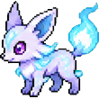

 Psychic
Psychic Light
LightTap a stage to read its story.
Spirkit is a small pale-blue fox with large violet eyes and a single blue flame flickering from the tip of its tail. Its coat shimmers faintly as though lit from inside, and its round ears twitch at stray thoughts drifting on the breeze. It lives among the luminous clearings of the Psychic Temple, chasing motes of wandering intention it can almost see. Guardians say it was the first creature to hear Akilla's lullaby and follow the melody home, not knowing where it led.
Field note: Spirkit tilts one ear forward whenever someone nearby is about to say a new sound.
Light Grove. Spirkit and its family are found in the Light Grove. See everyone who lives there.
Share a Bond Food that matches its types to become friends. Spirkit loves:
A Bond Food is not a trick. It joins your spirit with the Kimuro's spirit, and only when it chooses you.
Print the Kimuro adventure packs: mazes, cards, a board game and Bond Mark medals.
See the printable packs